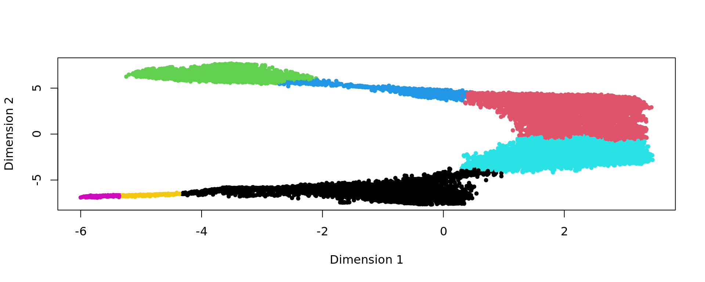
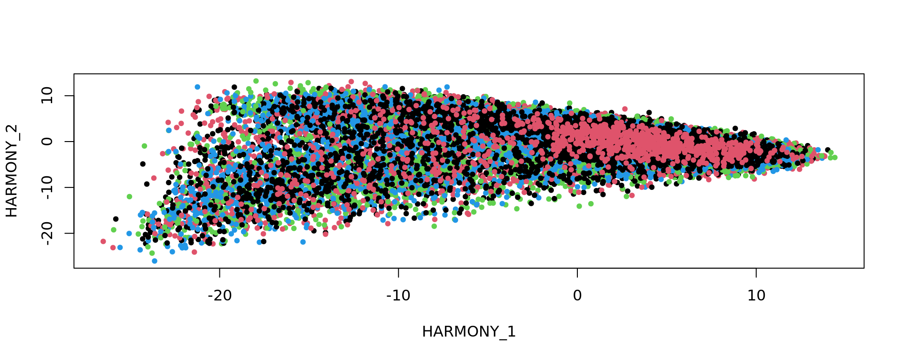

DLPFC
Last updated: 2024-10-19
Checks: 7 0
Knit directory: KODAMA-Analysis/
This reproducible R Markdown analysis was created with workflowr (version 1.7.1). The Checks tab describes the reproducibility checks that were applied when the results were created. The Past versions tab lists the development history.
Great! Since the R Markdown file has been committed to the Git repository, you know the exact version of the code that produced these results.
Great job! The global environment was empty. Objects defined in the global environment can affect the analysis in your R Markdown file in unknown ways. For reproduciblity it’s best to always run the code in an empty environment.
The command set.seed(20240618) was run prior to running
the code in the R Markdown file. Setting a seed ensures that any results
that rely on randomness, e.g. subsampling or permutations, are
reproducible.
Great job! Recording the operating system, R version, and package versions is critical for reproducibility.
Nice! There were no cached chunks for this analysis, so you can be confident that you successfully produced the results during this run.
Great job! Using relative paths to the files within your workflowr project makes it easier to run your code on other machines.
Great! You are using Git for version control. Tracking code development and connecting the code version to the results is critical for reproducibility.
The results in this page were generated with repository version 3490a11. See the Past versions tab to see a history of the changes made to the R Markdown and HTML files.
Note that you need to be careful to ensure that all relevant files for
the analysis have been committed to Git prior to generating the results
(you can use wflow_publish or
wflow_git_commit). workflowr only checks the R Markdown
file, but you know if there are other scripts or data files that it
depends on. Below is the status of the Git repository when the results
were generated:
Ignored files:
Ignored: .RData
Ignored: .Rhistory
Ignored: .Rproj.user/
Ignored: analysis/figure/
Untracked files:
Untracked: KODAMA.svg
Untracked: code/Acinar_Cell_Carcinoma.ipynb
Untracked: code/Adenocarcinoma.ipynb
Untracked: code/Adjacent_normal_section.ipynb
Untracked: code/DLFPC_preprocessing.R
Untracked: code/DLPFC - BANKSY.R
Untracked: code/DLPFC - BASS.R
Untracked: code/DLPFC - BAYESPACE.R
Untracked: code/DLPFC - Nonspatial.R
Untracked: code/DLPFC - PRECAST.R
Untracked: code/DLPFC_comparison.R
Untracked: code/DLPFC_results_analysis.R
Untracked: code/VisiumHD-CRC.ipynb
Untracked: data/DLFPC-Br5292-input.RData
Untracked: data/DLFPC-Br5595-input.RData
Untracked: data/DLFPC-Br8100-input.RData
Untracked: data/DLPFC-general.RData
Untracked: data/spots_classification_ALL.csv
Untracked: data/trajectories.RData
Untracked: data/trajectories_VISIUMHD.RData
Untracked: output/BANSKY-results.RData
Untracked: output/BASS-results.RData
Untracked: output/BayesSpace-results.RData
Untracked: output/CRC-image.RData
Untracked: output/CRC-image2.RData
Untracked: output/DLFPC-All.RData
Untracked: output/DLFPC-Br5292.RData
Untracked: output/DLFPC-Br5595.RData
Untracked: output/DLFPC-Br8100.RData
Untracked: output/Figure 1 - boxplot.pdf
Untracked: output/Figure 2 - DLPFC 10.pdf
Untracked: output/KODAMA-results.RData
Untracked: output/MERFISH.RData
Untracked: output/Nonspatial-results.RData
Untracked: output/PRECAST-results.RData
Untracked: output/Prostate.RData
Untracked: output/VisiumHD3.RData
Untracked: output/image.RData
Unstaged changes:
Deleted: analysis/DLPFC-12.Rmd
Deleted: analysis/DLPFC-4.Rmd
Deleted: analysis/DLPFC1.Rmd
Deleted: analysis/DLPFC10.Rmd
Deleted: analysis/DLPFC2.Rmd
Deleted: analysis/DLPFC3.Rmd
Deleted: analysis/DLPFC4.Rmd
Deleted: analysis/DLPFC5.Rmd
Deleted: analysis/DLPFC6.Rmd
Deleted: analysis/DLPFC7.Rmd
Deleted: analysis/DLPFC8.Rmd
Deleted: analysis/DLPFC9.Rmd
Modified: analysis/Giotto.Rmd
Deleted: analysis/STARmap.Rmd
Modified: analysis/VisiumHD.Rmd
Note that any generated files, e.g. HTML, png, CSS, etc., are not included in this status report because it is ok for generated content to have uncommitted changes.
These are the previous versions of the repository in which changes were
made to the R Markdown (analysis/DLPFC.Rmd) and HTML
(docs/DLPFC.html) files. If you’ve configured a remote Git
repository (see ?wflow_git_remote), click on the hyperlinks
in the table below to view the files as they were in that past version.
| File | Version | Author | Date | Message |
|---|---|---|---|---|
| Rmd | 3490a11 | Stefano Cacciatore | 2024-10-19 | Start my new project |
| Rmd | 43ad12f | Stefano Cacciatore | 2024-10-18 | Start my new project |
| Rmd | 2c73e5e | Stefano Cacciatore | 2024-10-18 | Start my new project |
| Rmd | d75807e | Stefano Cacciatore | 2024-10-17 | Start my new project |
| html | ede33d2 | Stefano Cacciatore | 2024-10-17 | Build site. |
| Rmd | 1ec4751 | Stefano Cacciatore | 2024-10-17 | Start my new project |
| html | 773f9ef | Stefano Cacciatore | 2024-10-16 | Build site. |
| Rmd | df98881 | Stefano Cacciatore | 2024-10-16 | Start my new project |
| Rmd | 47b0163 | Stefano Cacciatore | 2024-10-15 | Start my new project |
| html | fd8d092 | Stefano Cacciatore | 2024-10-15 | Build site. |
| Rmd | e31e3e8 | Stefano Cacciatore | 2024-10-15 | Start my new project |
| html | 1edc32b | Stefano Cacciatore | 2024-10-11 | Build site. |
| Rmd | eaad1a0 | Stefano Cacciatore | 2024-10-11 | Start my new project |
| html | c9d54ee | Stefano Cacciatore | 2024-10-11 | Build site. |
| Rmd | fa049de | Stefano Cacciatore | 2024-10-11 | Start my new project |
| Rmd | 454b8fc | Stefano Cacciatore | 2024-10-11 | Start my new project |
| html | 1352d91 | Stefano Cacciatore | 2024-10-10 | Build site. |
| Rmd | 1b119a0 | Stefano Cacciatore | 2024-10-10 | Start my new project |
| html | 6038af1 | Stefano Cacciatore | 2024-10-09 | Build site. |
| Rmd | d141628 | Stefano Cacciatore | 2024-10-09 | Start my new project |
| html | d1192e9 | Stefano Cacciatore | 2024-08-12 | Build site. |
| html | 3374e66 | Stefano Cacciatore | 2024-08-06 | Build site. |
| html | 35ce733 | Stefano Cacciatore | 2024-08-03 | Build site. |
| Rmd | 06f7055 | Stefano Cacciatore | 2024-08-02 | Start my new project |
| Rmd | 7be8f59 | tkcaccia | 2024-07-15 | updates |
| Rmd | f8ca54a | tkcaccia | 2024-07-14 | update |
| html | f8ca54a | tkcaccia | 2024-07-14 | update |
| html | 3ea09a6 | GitHub | 2024-07-08 | Update DLPFC.html |
| html | 93915d8 | GitHub | 2024-07-04 | Update DLPFC.html |
| html | ee4ee17 | GitHub | 2024-06-19 | Add files via upload |
| Rmd | 615fc05 | GitHub | 2024-06-19 | Add files via upload |
Introduction
Here, we apply KODAMA to analyze the human dorsolateral prefrontal cortex (DLPFC) data by 10x Visium from Maynard et al., 2021. The links to download the raw data and H&E full resolution images can be found in the LieberInstitute/spatialLIBD github page.
Loading the required libraries
library("nnSVG")
library("scater")
library("scran")
library("scry")
library("SPARK")
library("harmony")
library("Seurat")
library("spatialLIBD")
library("KODAMAextra")
library("mclust")
library("slingshot")
library("irlba")Download the dataset
spe <- fetch_data(type = 'spe')Extract the metadata information
n.cores=40
splitting = 100
spatial.resolution = 0.3
aa_noise=3
gene_number=2000
graph = 20
seed=123
set.seed(seed)
ID=unlist(lapply(strsplit(rownames(colData(spe)),"-"),function(x) x[1]))
samples=colData(spe)$sample_id
rownames(colData(spe))=paste(ID,samples,sep="-")
txtfile=paste(splitting,spatial.resolution,aa_noise,2,gene_number,sep="_")
sample_names=c("151507",
"151508",
"151509",
"151510",
"151669",
"151670",
"151671",
"151672",
"151673",
"151674",
"151675",
"151676")
subject_names= c("Br5292","Br5595", "Br8100")
metaData = SingleCellExperiment::colData(spe)
expr = SingleCellExperiment::counts(spe)
sample_names <- paste0("sample_", unique(colData(spe)$sample_id))
sample_names <- unique(colData(spe)$sample_id)
dim(spe)[1] 33538 47681# identify mitochondrial genes
is_mito <- grepl("(^MT-)|(^mt-)", rowData(spe)$gene_name)
table(is_mito)is_mito
FALSE TRUE
33525 13 # calculate per-spot QC metrics
spe <- addPerCellQC(spe, subsets = list(mito = is_mito))
# select QC thresholds
qc_lib_size <- colData(spe)$sum < 500
qc_detected <- colData(spe)$detected < 250
qc_mito <- colData(spe)$subsets_mito_percent > 30
qc_cell_count <- colData(spe)$cell_count > 12
# spots to discard
discard <- qc_lib_size | qc_detected | qc_mito | qc_cell_count
table(discard)discard
FALSE TRUE
46653 1028 colData(spe)$discard <- discard
# filter low-quality spots
spe <- spe[, !colData(spe)$discard]
dim(spe)[1] 33538 46653spe <- filter_genes(
spe,
filter_genes_ncounts = 2, #ncounts
filter_genes_pcspots = 0.5,
filter_mito = TRUE
)
dim(spe)[1] 6623 46653sel= !is.na(colData(spe)$layer_guess_reordered)
spe = spe[,sel]
dim(spe)[1] 6623 46318spe <- computeLibraryFactors(spe)
spe <- logNormCounts(spe)
subjects=colData(spe)$subject
labels=as.factor(colData(spe)$layer_guess_reordered)
xy=as.matrix(spatialCoords(spe))
samples=colData(spe)$sample_id
cols_cluster <- c("#0000b6", "#81b29a", "#f2cc8f","#e07a5f",
"#cc00b6", "#81ccff", "#33b233")
plot_slide(xy,samples,labels,col=cols_cluster)
Gene selection
The identification of genes that display spatial expression patterns is performed using the SPARKX method (Zhu et al. (2021)). The genes are ranked based on the median value of the logarithm value of the p-value obtained in each slide individually.
top=multi_SPARKX(spe,n.cores=n.cores)Warning in asMethod(object): sparse->dense coercion: allocating vector of size
2.3 GiBdata=as.matrix(t(logcounts(spe)[top[1:gene_number],]))
samples=colData(spe)$sample_id
labels=as.factor(colData(spe)$layer_guess_reordered)
names(labels)=rownames(colData(spe))
subjects=colData(spe)$subjectPatient Br5595
subject_names="Br5595"
nclusters=5
spe_sub <- spe[, colData(spe)$subject == subject_names]
# subjects=colData(spe_sub)$subject
dim(spe_sub)[1] 6623 14646# spe_sub <- runPCA(spe_sub, 50,subset_row = top[1:gene_number], scale=TRUE)
#pca=reducedDim(spe_sub,type = "PCA")[,1:50]
spe_sub <- spe[, colData(spe)$subject == subject_names]
sel= subjects == subject_names
data_Br5595=data[sel,top[1:gene_number]]
RNA.scaled=scale(data_Br5595)
pca_results <- irlba(A = RNA.scaled, nv = 50)
pca_Br5595 <- pca_results$u %*% diag(pca_results$d)[,1:50]
rownames(pca_Br5595)=rownames(data_Br5595)
colnames(pca_Br5595)=paste("PC",1:50,sep="")
labels=as.factor(colData(spe_sub)$layer_guess_reordered)
names(labels)=rownames(colData(spe_sub))
xy=as.matrix(spatialCoords(spe_sub))
rownames(xy)=rownames(colData(spe_sub))
samples=colData(spe_sub)$sample_id
plot(pca_Br5595, pch=20,col=as.factor(colData(spe_sub)$sample_id))
KODAMA analysis
set.seed(seed)
kk=KODAMA.matrix.parallel(pca_Br5595,
spatial = xy,
samples=samples,
FUN= "PLS" ,
landmarks = 100000,
splitting = splitting,
f.par.pls = 50,
spatial.resolution = spatial.resolution,
n.cores=n.cores,
aa_noise=aa_noise,
seed = seed)Calculating Network
Calculating Network spatial
socket cluster with 40 nodes on host 'localhost'
================================================================================
Finished parallel computation
[1] "Calculation of dissimilarity matrix..."
================================================================================print("KODAMA finished")[1] "KODAMA finished"config=umap.defaults
config$n_threads = n.cores
config$n_sgd_threads = "auto"
kk_UMAP=KODAMA.visualization(kk,method="UMAP",config=config)
plot(kk_UMAP,pch=20,col=as.factor(labels))
Graph-based clustering
# Graph-based clustering
g <- bluster::makeSNNGraph(as.matrix(kk_UMAP), k = 20)
g_walk <- igraph::cluster_walktrap(g)
clu <- as.character(igraph::cut_at(g_walk, no = 2))
plot(kk_UMAP,pch=20,col=as.factor(clu))
cols_cluster <- c("#0000b6", "#f2cc8f")
plot_slide(xy,as.factor(samples),clu,col=cols_cluster)
FB=names(which.min(table(clu)))
selFB=clu!=FB
# kk_UMAP=kk_UMAP[selFB,]
# labels=labels[selFB]
# samples=samples[selFB]
# xy=xy[selFB,]
g <- bluster::makeSNNGraph(as.matrix(kk_UMAP[selFB,]), k = graph)
g_walk <- igraph::cluster_walktrap(g)
clu <- as.character(igraph::cut_at(g_walk, no = nclusters))
plot(kk_UMAP[selFB,],pch=20,col=as.factor(clu))
ref=refine_SVM(xy[selFB,],clu,samples[selFB],cost=100)[1] "151669"
[1] "151670"
[1] "151671"
[1] "151672"u=unique(samples[selFB])
for(j in u){
sel=samples[selFB]==j
print(mclust::adjustedRandIndex(labels[selFB][sel],ref[sel]))
}[1] 0.7708206
[1] 0.7696762
[1] 0.8132983
[1] 0.7338236 ###########
cols_cluster <- c("#0000b6", "#81b29a", "#f2cc8f","#e07a5f",
"#cc00b6", "#81ccff", "#33b233")
plot_slide(xy,samples,labels,col=cols_cluster)
plot_slide(xy[selFB,],samples[selFB],ref,col=cols_cluster)
kk_UMAP_Br5595=kk_UMAP
samples_Br5595=samples
xy_Br5595=xy
labels_Br5595=labels
subject_names_Br5595=subject_names
ref_Br5595=ref
clu_Br5595=clu
save(kk_UMAP_Br5595,samples_Br5595,xy_Br5595,labels_Br5595,subject_names_Br5595,ref_Br5595,clu_Br5595,selFB,file="output/DLFPC-Br5595.RData")
save(data_Br5595,pca_Br5595,samples_Br5595,xy_Br5595,labels_Br5595,subject_names_Br5595,selFB,file="data/DLFPC-Br5595-input.RData")Patient Br5292
subject_names="Br5292"
nclusters=7
spe_sub <- spe[, colData(spe)$subject == subject_names]
dim(spe_sub)[1] 6623 17734# spe_sub <- runPCA(spe_sub, 50,subset_row = top[1:gene_number], scale=TRUE)
#pca=reducedDim(spe_sub,type = "PCA")[,1:50]
spe_sub <- spe[, colData(spe)$subject == subject_names]
sel= subjects == subject_names
data_Br5292=data[sel,top[1:gene_number]]
RNA.scaled=scale(data_Br5292)
pca_results <- irlba(A = RNA.scaled, nv = 50)
pca_Br5292 <- pca_results$u %*% diag(pca_results$d)[,1:50]
rownames(pca_Br5292)=rownames(data_Br5292)
colnames(pca_Br5292)=paste("PC",1:50,sep="")
labels=as.factor(colData(spe_sub)$layer_guess_reordered)
names(labels)=rownames(colData(spe_sub))
xy=as.matrix(spatialCoords(spe_sub))
rownames(xy)=rownames(colData(spe_sub))
samples=colData(spe_sub)$sample_id
plot(pca_Br5292, pch=20,col=as.factor(colData(spe_sub)$sample_id))
KODAMA analysis
set.seed(seed)
kk=KODAMA.matrix.parallel(pca_Br5292,
spatial = xy,
samples=samples,
FUN= "PLS" ,
landmarks = 100000,
splitting = splitting,
f.par.pls = 50,
spatial.resolution = spatial.resolution,
n.cores=n.cores,
aa_noise=aa_noise,
seed = seed)Calculating Network
Calculating Network spatial
socket cluster with 40 nodes on host 'localhost'
================================================================================
Finished parallel computation
[1] "Calculation of dissimilarity matrix..."
================================================================================ print("KODAMA finished")[1] "KODAMA finished" config=umap.defaults
config$n_threads = n.cores
config$n_sgd_threads = "auto"
kk_UMAP=KODAMA.visualization(kk,method="UMAP",config=config)
plot(kk_UMAP,pch=20,col=as.factor(labels))
Graph-based clustering
# Graph-based clustering
g <- bluster::makeSNNGraph(as.matrix(kk_UMAP), k = graph)
g_walk <- igraph::cluster_walktrap(g)
clu <- as.character(igraph::cut_at(g_walk, no = nclusters))
plot(kk_UMAP,pch=20,col=as.factor(clu))
ref=refine_SVM(xy,clu,samples,cost=100)[1] "151507"
[1] "151508"
[1] "151509"
[1] "151510" u=unique(samples)
for(j in u){
sel=samples==j
print(mclust::adjustedRandIndex(labels[sel],ref[sel]))
}[1] 0.4816022
[1] 0.522308
[1] 0.4649832
[1] 0.4428301 ###########
g <- bluster::makeSNNGraph(as.matrix(kk_UMAP), k = graph)
g_walk <- igraph::cluster_walktrap(g)
clu <- as.character(igraph::cut_at(g_walk, no = nclusters))
ref=refine_SVM(xy,clu,samples,cost=100)[1] "151507"
[1] "151508"
[1] "151509"
[1] "151510" u=unique(samples)
for(j in u){
sel=samples==j
print(mclust::adjustedRandIndex(labels[sel],ref[sel]))
}[1] 0.4816022
[1] 0.522308
[1] 0.4649832
[1] 0.4428301 ###########
cols_cluster <- c("#0000b6", "#81b29a", "#f2cc8f","#e07a5f",
"#cc00b6", "#81ccff", "#33b233")
plot_slide(xy,samples,labels,col=cols_cluster)
plot_slide(xy,samples,ref,col=cols_cluster)
kk_UMAP_Br5292=kk_UMAP
samples_Br5292=samples
xy_Br5292=xy
labels_Br5292=labels
subject_names_Br5292=subject_names
ref_Br5292=ref
clu_Br5292=clu
save(kk_UMAP_Br5292,pca_Br5292,samples_Br5292,xy_Br5292,subject_names_Br5292,labels_Br5292,ref_Br5292,clu_Br5292,file="output/DLFPC-Br5292.RData")
save(data_Br5292,pca_Br5292,samples_Br5292,xy_Br5292,labels_Br5292,subject_names_Br5292,file="data/DLFPC-Br5292-input.RData")Patient Br8100
subject_names="Br8100"
nclusters=7
spe_sub <- spe[, colData(spe)$subject == subject_names]
dim(spe_sub)[1] 6623 13938# spe_sub <- runPCA(spe_sub, 50,subset_row = top[1:gene_number], scale=TRUE)
#pca=reducedDim(spe_sub,type = "PCA")[,1:50]
spe_sub <- spe[, colData(spe)$subject == subject_names]
sel= subjects == subject_names
data_Br8100=data[sel,top[1:gene_number]]
RNA.scaled=scale(data_Br8100)
pca_results <- irlba(A = RNA.scaled, nv = 50)
pca_Br8100 <- pca_results$u %*% diag(pca_results$d)[,1:50]
rownames(pca_Br8100)=rownames(data_Br8100)
colnames(pca_Br8100)=paste("PC",1:50,sep="")
labels=as.factor(colData(spe_sub)$layer_guess_reordered)
names(labels)=rownames(colData(spe_sub))
xy=as.matrix(spatialCoords(spe_sub))
rownames(xy)=rownames(colData(spe_sub))
samples=colData(spe_sub)$sample_id
plot(pca_Br8100, pch=20,col=as.factor(colData(spe_sub)$sample_id))
KODAMA analysis
set.seed(seed)
kk=KODAMA.matrix.parallel(pca_Br8100,
spatial = xy,
samples=samples,
FUN= "PLS" ,
landmarks = 100000,
splitting = splitting,
f.par.pls = 50,
spatial.resolution = spatial.resolution,
n.cores=n.cores,
aa_noise=aa_noise,
seed = seed)Calculating Network
Calculating Network spatial
socket cluster with 40 nodes on host 'localhost'
================================================================================
Finished parallel computation
[1] "Calculation of dissimilarity matrix..."
================================================================================ print("KODAMA finished")[1] "KODAMA finished" config=umap.defaults
config$n_threads = n.cores
config$n_sgd_threads = "auto"
kk_UMAP=KODAMA.visualization(kk,method="UMAP",config=config)
plot(kk_UMAP,pch=20,col=as.factor(labels))
Graph-based clustering
# Graph-based clustering
g <- bluster::makeSNNGraph(as.matrix(kk_UMAP), k = graph)
g_walk <- igraph::cluster_walktrap(g)
clu <- as.character(igraph::cut_at(g_walk, no = nclusters))
ref=refine_SVM(xy,clu,samples,cost=100)[1] "151673"
[1] "151674"
[1] "151675"
[1] "151676" u=unique(samples)
for(j in u){
sel=samples==j
print(mclust::adjustedRandIndex(labels[sel],ref[sel]))
}[1] 0.5925319
[1] 0.6698008
[1] 0.6271936
[1] 0.6138289 ###########
g <- bluster::makeSNNGraph(as.matrix(kk_UMAP), k = graph)
g_walk <- igraph::cluster_walktrap(g)
clu <- as.character(igraph::cut_at(g_walk, no = nclusters))
plot(kk_UMAP,pch=20,col=as.factor(clu))
ref=refine_SVM(xy,clu,samples,cost=100)[1] "151673"
[1] "151674"
[1] "151675"
[1] "151676" u=unique(samples)
for(j in u){
sel=samples==j
print(mclust::adjustedRandIndex(labels[sel],ref[sel]))
}[1] 0.5925319
[1] 0.6698008
[1] 0.6271936
[1] 0.6138289 ###########
cols_cluster <- c("#0000b6", "#81b29a", "#f2cc8f","#e07a5f",
"#cc00b6", "#81ccff", "#33b233")
plot_slide(xy,samples,labels,col=cols_cluster)
plot_slide(xy,samples,ref,col=cols_cluster)
kk_UMAP_Br8100=kk_UMAP
samples_Br8100=samples
xy_Br8100=xy
labels_Br8100=labels
subject_names_Br8100=subject_names
ref_Br8100=ref
clu_Br8100=clu
save(kk_UMAP_Br8100,pca_Br8100,samples_Br8100,xy_Br8100,subject_names_Br8100,labels_Br8100,ref_Br8100,clu_Br8100,file="output/DLFPC-Br8100.RData")
save(data_Br8100,pca_Br8100,samples_Br8100,xy_Br8100,labels_Br8100,subject_names_Br8100,file="data/DLFPC-Br8100-input.RData")Saving the results
results_KODAMA <- list()
results_KODAMA$clusters <- list()
results_KODAMA$labels <- list()
results_KODAMA$feature_extraction <- list()
results_KODAMA$xy <- list()
results_KODAMA$clusters=c(results_KODAMA$clusters,tapply(ref_Br5292,samples_Br5292,function(x) x))
results_KODAMA$clusters=c(results_KODAMA$clusters,tapply(ref_Br5595,samples_Br5595[selFB],function(x) x))
results_KODAMA$clusters=c(results_KODAMA$clusters,tapply(ref_Br8100,samples_Br8100,function(x) x))
results_KODAMA$labels=c(results_KODAMA$labels,tapply(labels_Br5292,samples_Br5292,function(x) x))
results_KODAMA$labels=c(results_KODAMA$labels,tapply(labels_Br5595[selFB],samples_Br5595[selFB],function(x) x))
results_KODAMA$labels=c(results_KODAMA$labels,tapply(labels_Br8100,samples_Br8100,function(x) x))
results_KODAMA$feature_extraction=c(results_KODAMA$feature_extraction,by(kk_UMAP_Br5292,samples_Br5292,function(x) x))
results_KODAMA$feature_extraction=c(results_KODAMA$feature_extraction,by(kk_UMAP_Br5595[selFB,],samples_Br5595[selFB],function(x) x))
results_KODAMA$feature_extraction=c(results_KODAMA$feature_extraction,by(kk_UMAP_Br8100,samples_Br8100,function(x) x))
results_KODAMA$xy=c(results_KODAMA$xy,by(xy_Br5292,samples_Br5292,function(x) x))
results_KODAMA$xy=c(results_KODAMA$xy,by(xy_Br5595[selFB,],samples_Br5595[selFB],function(x) x))
results_KODAMA$xy=c(results_KODAMA$xy,by(xy_Br8100,samples_Br8100,function(x) x))
save(results_KODAMA,file="output/KODAMA-results.RData")#seurat list preprocessing
source("code/DLFPC_preprocessing.R")[1] 1
[1] 2
[1] 3
[1] 4
[1] 5
[1] 6
[1] 7
[1] 8
[1] 9
[1] 10
[1] 11
[1] 1212 Slides
PCA and HARMONY
dim(spe_sub)[1] 6623 13938 spe <- runPCA(spe, 50,subset_row = top[1:gene_number], scale=TRUE)
subjects=colData(spe)$subject
labels=as.factor(colData(spe)$layer_guess_reordered)
xy=as.matrix(spatialCoords(spe))
samples=colData(spe)$sample_id
spe <- RunHarmony(spe, "subject",lambda=NULL)
pca=reducedDim(spe,type = "HARMONY")[,1:50]
plot(pca, pch=20,col=as.factor(colData(spe_sub)$sample_id))
KODAMA
set.seed(seed)
kk=KODAMA.matrix.parallel(pca,
spatial = xy,
samples=samples,
FUN= "PLS" ,
landmarks = 100000,
splitting = 300,
f.par.pls = 50,
spatial.resolution = spatial.resolution,
n.cores=n.cores,
aa_noise=aa_noise,
seed = seed)Calculating Network
Calculating Network spatial
socket cluster with 40 nodes on host 'localhost'
================================================================================
Finished parallel computation
[1] "Calculation of dissimilarity matrix..."
================================================================================print("KODAMA finished")[1] "KODAMA finished"config=umap.defaults
config$n_threads = n.cores
config$n_sgd_threads = "auto"
kk_UMAP=KODAMA.visualization(kk,method="UMAP",config=config)
plot(kk_UMAP,pch=20,col=as.factor(labels))
CLUSTER
g <- bluster::makeSNNGraph(as.matrix(kk_UMAP), k = graph)
g_walk <- igraph::cluster_walktrap(g)
clu <- as.character(igraph::cut_at(g_walk, no = 7))
plot(kk_UMAP,pch=20,col=as.factor(clu)) 
ref=refine_SVM(xy,clu,samples,cost=100)[1] "151507"
[1] "151508"
[1] "151509"
[1] "151510"
[1] "151669"
[1] "151670"
[1] "151671"
[1] "151672"
[1] "151673"
[1] "151674"
[1] "151675"
[1] "151676"cols_cluster <- c("#0000b6", "#81b29a", "#f2cc8f","#e07a5f",
"#cc00b6", "#81ccff", "#33b233")
plot_slide(xy,samples,ref,col=cols_cluster)
CLUSTER
clu=kmeans(kk_UMAP,7,nstart = 100)$cluster
plot(kk_UMAP,col=labels,pch=20)
plot(kk_UMAP,col=cols_cluster[clu],pch=20)
u=unique(samples)
for(i in 1:length(u)){
sel=samples==u[i]
print(adjustedRandIndex(labels[sel],clu[sel]))
}[1] 0.5284518
[1] 0.4909196
[1] 0.4830495
[1] 0.4689889
[1] 0.3425394
[1] 0.3187019
[1] 0.3771417
[1] 0.416698
[1] 0.5466472
[1] 0.555753
[1] 0.5436048
[1] 0.5270994ref=refine_SVM(xy,clu,samples,cost=100)[1] "151507"
[1] "151508"
[1] "151509"
[1] "151510"
[1] "151669"
[1] "151670"
[1] "151671"
[1] "151672"
[1] "151673"
[1] "151674"
[1] "151675"
[1] "151676"u=unique(samples)
for(i in 1:length(u)){
sel=samples==u[i]
print(adjustedRandIndex(labels[sel],ref[sel]))
}[1] 0.5737931
[1] 0.5208063
[1] 0.4923182
[1] 0.4875874
[1] 0.385967
[1] 0.3768955
[1] 0.448543
[1] 0.5415363
[1] 0.5919723
[1] 0.5990537
[1] 0.609972
[1] 0.5886862plot_slide(xy,samples,ref,col=cols_cluster)
| Version | Author | Date |
|---|---|---|
| fd8d092 | Stefano Cacciatore | 2024-10-15 |
TRAJECTORY
d <- slingshot(kk_UMAP, clusterLabels = clu)
trajectory=d@metadata$curves$Lineage1$s
k=knn_Armadillo(trajectory,kk_UMAP,1)
map_color=rainbow(nrow(trajectory))[k$nn_index]
plot(kk_UMAP,pch=20,col=map_color)
plot_slide(xy,samples,k$nn_index,col=rainbow(nrow(trajectory)))
| Version | Author | Date |
|---|---|---|
| fd8d092 | Stefano Cacciatore | 2024-10-15 |
[1] 7
[1] 1
[1] 2
[1] 2
[1] 2
[1] 2
[1] 2
[1] 2
[1] 3
[1] 4
[1] 4
[1] 4
[1] 4
[1] 4
[1] 5
[1] 5
[1] 5
[1] 5
[1] 5
[1] 5
[1] 5
[1] 6
[1] 6
[1] 6
[1] 7
[1] 4
[1] 4
[1] 4
[1] 4
[1] 4
[1] 4
[1] 4
[1] 5
[1] 1
[1] 1
[1] 1
[1] 2
[1] 2
[1] 3
[1] 3
[1] 3
[1] 3
[1] 3
[1] 4
[1] 4
[1] 4
[1] 4
[1] 4
[1] 5
[1] 7
[1] 2
[1] 2
[1] 2
[1] 2
[1] 2
[1] 2
[1] 3
[1] 3
[1] 4
[1] 4
[1] 4
[1] 4
[1] 4
[1] 4
[1] 4
[1] 4
[1] 4
[1] 6
[1] 5
[1] 6
[1] 7
***************************************
INPUT INFO:
- Number of tissue sections: 4
- Number of cells/spots: 4170 4285 4708 4571
- Number of genes: 2000
- Potts interaction parameter estimation method: SW
- Estimate Potts interaction parameter with SW algorithm
To list all hyper-parameters, Type listAllHyper(BASS_object)
***************************************
Post-processing...
done
***************************************
INPUT INFO:
- Number of tissue sections: 4
- Number of cells/spots: 3587 3274 4013 3772
- Number of genes: 2000
- Potts interaction parameter estimation method: SW
- Estimate Potts interaction parameter with SW algorithm
To list all hyper-parameters, Type listAllHyper(BASS_object)
***************************************
Post-processing...
done
***************************************
INPUT INFO:
- Number of tissue sections: 4
- Number of cells/spots: 3568 3576 3468 3326
- Number of genes: 2000
- Potts interaction parameter estimation method: SW
- Estimate Potts interaction parameter with SW algorithm
To list all hyper-parameters, Type listAllHyper(BASS_object)
***************************************
Post-processing...
done
[1] 3
[1] 3
[1] 3
[1] 3
[1] 3
[1] 3
[1] 3
[1] 3
[1] 3
[1] 3
[1] 3
[1] 3
[1] 3
[1] 4
[1] 4
[1] 4
[1] 4
[1] 4
[1] 4
[1] 4
[1] 4
[1] 4
[1] 5
[1] 5
[1] 5
[1] 5
[1] 5
[1] 5
[1] 5
[1] 5
[1] 5
[1] 5
[1] 5
[1] 5
[1] 5
[1] 6
[1] 6
[1] 6
[1] 6
[1] 6
[1] 6
[1] 6
[1] 6
[1] 6
[1] 6
[1] 6
[1] 6
[1] 6
[1] 6
[1] 6
[1] 6
[1] 6
[1] 6
[1] 6
[1] 6
[1] 6
[1] 6
[1] 6
[1] 6
[1] 6
[1] 6
[1] 7
[1] 2
[1] 2
[1] 2
[1] 3
[1] 3
[1] 3
[1] 4
[1] 4
[1] 4
[1] 4
[1] 5
[1] 3
[1] 3
[1] 3
[1] 3
[1] 3
[1] 4
[1] 4
[1] 4
[1] 4
[1] 3
[1] 4
[1] 4
[1] 4
[1] 4
[1] 4
[1] 4
[1] 4
[1] 4
[1] 4
[1] 4
[1] 4
[1] 4
[1] 4
[1] 4
[1] 5
[1] 5
[1] 5
[1] 5
[1] 6
[1] 6
[1] 6
[1] 6
[1] 6
[1] 6
[1] 7
fitting ...
| | | 0% | |=================================== | 50% | |======================================================================| 100%
variable initialize finish!
predict Y and V!
diff Energy = 1.953018
diff Energy = 8.141713
diff Energy = 19.443110
diff Energy = 2.580638
Finish ICM step!
iter = 2, loglik= -13930299.000000, dloglik=0.993513
predict Y and V!
diff Energy = 3.343862
diff Energy = 1.076378
diff Energy = 16.470758
diff Energy = 3.114019
Finish ICM step!
iter = 3, loglik= -13855945.000000, dloglik=0.005338
predict Y and V!
diff Energy = 10.926458
diff Energy = 12.746197
diff Energy = 17.945403
diff Energy = 10.686093
Finish ICM step!
iter = 4, loglik= -13826536.000000, dloglik=0.002122
predict Y and V!
diff Energy = 12.373065
diff Energy = 7.074120
diff Energy = 24.492056
diff Energy = 19.422095
Finish ICM step!
iter = 5, loglik= -13812401.000000, dloglik=0.001022
predict Y and V!
diff Energy = 12.534292
diff Energy = 7.827485
diff Energy = 31.227270
diff Energy = 12.679315
Finish ICM step!
iter = 6, loglik= -13804297.000000, dloglik=0.000587
predict Y and V!
diff Energy = 7.976928
diff Energy = 12.374174
diff Energy = 35.633381
diff Energy = 14.944129
Finish ICM step!
iter = 7, loglik= -13799340.000000, dloglik=0.000359
predict Y and V!
diff Energy = 7.718569
diff Energy = 8.578184
diff Energy = 22.873074
diff Energy = 12.299571
Finish ICM step!
iter = 8, loglik= -13796130.000000, dloglik=0.000233
predict Y and V!
diff Energy = 6.616963
diff Energy = 4.701413
diff Energy = 19.178816
diff Energy = 10.107264
Finish ICM step!
iter = 9, loglik= -13793975.000000, dloglik=0.000156
predict Y and V!
diff Energy = 5.563113
diff Energy = 11.360947
diff Energy = 20.831881
diff Energy = 6.159683
Finish ICM step!
iter = 10, loglik= -13792445.000000, dloglik=0.000111
predict Y and V!
diff Energy = 1.923684
diff Energy = 10.232090
diff Energy = 20.112130
diff Energy = 4.056136
Finish ICM step!
iter = 11, loglik= -13791317.000000, dloglik=0.000082
predict Y and V!
diff Energy = 3.979426
diff Energy = 8.213570
diff Energy = 23.118767
diff Energy = 11.890381
Finish ICM step!
iter = 12, loglik= -13790474.000000, dloglik=0.000061
predict Y and V!
diff Energy = 0.517123
diff Energy = 5.708328
diff Energy = 26.217663
diff Energy = 12.489663
Finish ICM step!
iter = 13, loglik= -13789809.000000, dloglik=0.000048
predict Y and V!
diff Energy = 4.868877
diff Energy = 11.706409
diff Energy = 19.387300
diff Energy = 9.421632
Finish ICM step!
iter = 14, loglik= -13789288.000000, dloglik=0.000038
predict Y and V!
diff Energy = 0.167818
diff Energy = 6.425094
diff Energy = 25.762972
diff Energy = 4.255616
Finish ICM step!
iter = 15, loglik= -13788862.000000, dloglik=0.000031
predict Y and V!
diff Energy = 6.157080
diff Energy = 9.561001
diff Energy = 20.982824
diff Energy = 9.972268
Finish ICM step!
iter = 16, loglik= -13788518.000000, dloglik=0.000025
predict Y and V!
diff Energy = 0.811254
diff Energy = 9.090096
diff Energy = 22.996069
diff Energy = 12.289073
Finish ICM step!
iter = 17, loglik= -13788236.000000, dloglik=0.000020
predict Y and V!
diff Energy = 5.597086
diff Energy = 7.522623
diff Energy = 23.225553
diff Energy = 21.973080
Finish ICM step!
iter = 18, loglik= -13788006.000000, dloglik=0.000017
predict Y and V!
diff Energy = 6.266428
diff Energy = 2.871766
diff Energy = 23.844093
diff Energy = 14.426780
Finish ICM step!
iter = 19, loglik= -13787809.000000, dloglik=0.000014
predict Y and V!
diff Energy = 5.076429
diff Energy = 8.608232
diff Energy = 26.371702
diff Energy = 15.465027
Finish ICM step!
iter = 20, loglik= -13787643.000000, dloglik=0.000012
predict Y and V!
diff Energy = 2.606656
diff Energy = 2.685831
diff Energy = 29.903853
diff Energy = 17.212277
Finish ICM step!
iter = 21, loglik= -13787490.000000, dloglik=0.000011
predict Y and V!
diff Energy = 5.676004
diff Energy = 3.783376
diff Energy = 29.372576
diff Energy = 11.489312
Finish ICM step!
iter = 22, loglik= -13787365.000000, dloglik=0.000009
fitting ...
| | | 0% | |=================================== | 50% | |======================================================================| 100%
variable initialize finish!
predict Y and V!
diff Energy = 2.565470
diff Energy = 0.584042
diff Energy = 6.057265
diff Energy = 3.061791
Finish ICM step!
iter = 2, loglik= -9972800.000000, dloglik=0.995356
predict Y and V!
diff Energy = 14.114203
diff Energy = 1.165911
diff Energy = 0.753432
diff Energy = 1.194389
Finish ICM step!
iter = 3, loglik= -9914716.000000, dloglik=0.005824
predict Y and V!
diff Energy = 20.161622
diff Energy = 3.189229
diff Energy = 19.531276
diff Energy = 10.980305
Finish ICM step!
iter = 4, loglik= -9891159.000000, dloglik=0.002376
predict Y and V!
diff Energy = 19.147380
diff Energy = 10.431936
diff Energy = 2.947157
diff Energy = 6.377402
Finish ICM step!
iter = 5, loglik= -9879672.000000, dloglik=0.001161
predict Y and V!
diff Energy = 22.060679
diff Energy = 8.820266
diff Energy = 17.204482
diff Energy = 9.850850
Finish ICM step!
iter = 6, loglik= -9873269.000000, dloglik=0.000648
predict Y and V!
diff Energy = 17.484536
diff Energy = 13.904037
diff Energy = 0.970989
diff Energy = 7.993890
Finish ICM step!
iter = 7, loglik= -9869452.000000, dloglik=0.000387
predict Y and V!
diff Energy = 18.583919
diff Energy = 13.488603
diff Energy = 13.056635
diff Energy = 5.918180
Finish ICM step!
iter = 8, loglik= -9867032.000000, dloglik=0.000245
predict Y and V!
diff Energy = 13.752026
diff Energy = 22.456746
diff Energy = 0.517486
diff Energy = 8.704953
Finish ICM step!
iter = 9, loglik= -9865406.000000, dloglik=0.000165
predict Y and V!
diff Energy = 14.655218
diff Energy = 13.808834
diff Energy = 1.747965
diff Energy = 8.778440
Finish ICM step!
iter = 10, loglik= -9864276.000000, dloglik=0.000115
predict Y and V!
diff Energy = 13.660964
diff Energy = 17.445726
diff Energy = 2.945565
diff Energy = 5.123273
Finish ICM step!
iter = 11, loglik= -9863453.000000, dloglik=0.000083
predict Y and V!
diff Energy = 13.294779
diff Energy = 17.479028
diff Energy = 4.355807
diff Energy = 11.960606
Finish ICM step!
iter = 12, loglik= -9862866.000000, dloglik=0.000060
predict Y and V!
diff Energy = 13.146640
diff Energy = 20.702204
diff Energy = 1.542905
diff Energy = 7.328645
Finish ICM step!
iter = 13, loglik= -9862424.000000, dloglik=0.000045
predict Y and V!
diff Energy = 11.795079
diff Energy = 14.734103
diff Energy = 6.337264
diff Energy = 9.458880
Finish ICM step!
iter = 14, loglik= -9862076.000000, dloglik=0.000035
predict Y and V!
diff Energy = 12.161588
diff Energy = 13.036398
diff Energy = 6.881132
diff Energy = 10.586986
Finish ICM step!
iter = 15, loglik= -9861799.000000, dloglik=0.000028
predict Y and V!
diff Energy = 12.208746
diff Energy = 11.393562
diff Energy = 5.504740
diff Energy = 11.358293
Finish ICM step!
iter = 16, loglik= -9861573.000000, dloglik=0.000023
predict Y and V!
diff Energy = 15.334242
diff Energy = 6.691065
diff Energy = 3.301489
diff Energy = 15.225853
Finish ICM step!
iter = 17, loglik= -9861396.000000, dloglik=0.000018
predict Y and V!
diff Energy = 4.765992
diff Energy = 9.942739
diff Energy = 6.590917
diff Energy = 0.381692
Finish ICM step!
iter = 18, loglik= -9861231.000000, dloglik=0.000017
predict Y and V!
diff Energy = 3.507494
diff Energy = 6.647690
diff Energy = 3.728636
diff Energy = 6.103977
Finish ICM step!
iter = 19, loglik= -9861099.000000, dloglik=0.000013
predict Y and V!
diff Energy = 4.640637
diff Energy = 9.132833
diff Energy = 1.068987
diff Energy = 3.515024
Finish ICM step!
iter = 20, loglik= -9860988.000000, dloglik=0.000011
predict Y and V!
diff Energy = 6.008195
diff Energy = 6.416183
diff Energy = 4.608951
diff Energy = 3.900260
Finish ICM step!
iter = 21, loglik= -9860887.000000, dloglik=0.000010
predict Y and V!
diff Energy = 5.022243
diff Energy = 7.741218
diff Energy = 0.879150
diff Energy = 6.282546
Finish ICM step!
iter = 22, loglik= -9860798.000000, dloglik=0.000009
fitting ...
| | | 0% | |=================================== | 50% | |======================================================================| 100%
variable initialize finish!
predict Y and V!
diff Energy = 6.154259
diff Energy = 0.674600
diff Energy = 21.472756
diff Energy = 3.920762
Finish ICM step!
iter = 2, loglik= -9267840.000000, dloglik=0.995684
predict Y and V!
diff Energy = 9.144959
diff Energy = 0.370867
diff Energy = 14.004674
diff Energy = 4.651187
Finish ICM step!
iter = 3, loglik= -9207665.000000, dloglik=0.006493
predict Y and V!
diff Energy = 18.268786
diff Energy = 12.287058
diff Energy = 31.479777
diff Energy = 31.660518
Finish ICM step!
iter = 4, loglik= -9182367.000000, dloglik=0.002747
predict Y and V!
diff Energy = 32.759643
diff Energy = 18.929512
diff Energy = 29.591938
diff Energy = 11.306277
Finish ICM step!
iter = 5, loglik= -9169607.000000, dloglik=0.001390
predict Y and V!
diff Energy = 24.618622
diff Energy = 21.819884
diff Energy = 34.194294
diff Energy = 14.214422
Finish ICM step!
iter = 6, loglik= -9162353.000000, dloglik=0.000791
predict Y and V!
diff Energy = 24.780251
diff Energy = 6.760886
diff Energy = 24.640985
diff Energy = 14.435737
Finish ICM step!
iter = 7, loglik= -9157901.000000, dloglik=0.000486
predict Y and V!
diff Energy = 30.391947
diff Energy = 11.457682
diff Energy = 28.493764
diff Energy = 21.204576
Finish ICM step!
iter = 8, loglik= -9155034.000000, dloglik=0.000313
predict Y and V!
diff Energy = 22.595902
diff Energy = 7.759056
diff Energy = 6.491424
diff Energy = 18.470470
Finish ICM step!
iter = 9, loglik= -9153073.000000, dloglik=0.000214
predict Y and V!
diff Energy = 11.787161
diff Energy = 11.660366
diff Energy = 10.471258
diff Energy = 22.365486
Finish ICM step!
iter = 10, loglik= -9151693.000000, dloglik=0.000151
predict Y and V!
diff Energy = 20.443170
diff Energy = 4.844400
diff Energy = 6.870913
diff Energy = 22.530623
Finish ICM step!
iter = 11, loglik= -9150682.000000, dloglik=0.000110
predict Y and V!
diff Energy = 9.287491
diff Energy = 2.055274
diff Energy = 10.272830
diff Energy = 25.210668
Finish ICM step!
iter = 12, loglik= -9149904.000000, dloglik=0.000085
predict Y and V!
diff Energy = 9.850887
diff Energy = 3.479769
diff Energy = 2.225239
diff Energy = 25.191220
Finish ICM step!
iter = 13, loglik= -9149279.000000, dloglik=0.000068
predict Y and V!
diff Energy = 8.240278
diff Energy = 8.621623
diff Energy = 3.149501
diff Energy = 27.705288
Finish ICM step!
iter = 14, loglik= -9148850.000000, dloglik=0.000047
predict Y and V!
diff Energy = 9.282241
diff Energy = 0.394975
diff Energy = 1.471517
diff Energy = 28.640782
Finish ICM step!
iter = 15, loglik= -9148410.000000, dloglik=0.000048
predict Y and V!
diff Energy = 9.232025
diff Energy = 3.868532
diff Energy = 5.221636
diff Energy = 24.500799
Finish ICM step!
iter = 16, loglik= -9148068.000000, dloglik=0.000037
predict Y and V!
diff Energy = 14.312273
diff Energy = 1.721576
diff Energy = 1.868712
diff Energy = 28.580078
Finish ICM step!
iter = 17, loglik= -9147758.000000, dloglik=0.000034
predict Y and V!
diff Energy = 10.519846
diff Energy = 3.306228
diff Energy = 3.078168
diff Energy = 31.128279
Finish ICM step!
iter = 18, loglik= -9147539.000000, dloglik=0.000024
predict Y and V!
diff Energy = 8.912950
diff Energy = 0.887420
diff Energy = 10.734067
diff Energy = 29.072680
Finish ICM step!
iter = 19, loglik= -9147289.000000, dloglik=0.000027
predict Y and V!
diff Energy = 9.127815
diff Energy = 3.416733
diff Energy = 0.088839
diff Energy = 31.428592
Finish ICM step!
iter = 20, loglik= -9147068.000000, dloglik=0.000024
predict Y and V!
diff Energy = 9.630816
diff Energy = 1.456853
diff Energy = 6.223830
diff Energy = 18.127232
Finish ICM step!
iter = 21, loglik= -9146873.000000, dloglik=0.000021
predict Y and V!
diff Energy = 4.558375
diff Energy = 3.492783
diff Energy = 2.248278
diff Energy = 28.422799
Finish ICM step!
iter = 22, loglik= -9146675.000000, dloglik=0.000022
predict Y and V!
diff Energy = 4.865577
diff Energy = 0.205503
diff Energy = 2.129716
diff Energy = 29.027058
Finish ICM step!
iter = 23, loglik= -9146493.000000, dloglik=0.000020
predict Y and V!
diff Energy = 6.491902
diff Energy = 2.425016
diff Energy = 31.081611
Finish ICM step!
iter = 24, loglik= -9146345.000000, dloglik=0.000016
predict Y and V!
diff Energy = 4.151331
diff Energy = 0.154580
diff Energy = 29.134086
Finish ICM step!
iter = 25, loglik= -9146171.000000, dloglik=0.000019
predict Y and V!
diff Energy = 4.601915
diff Energy = 0.466578
diff Energy = 2.671628
diff Energy = 31.407540
Finish ICM step!
iter = 26, loglik= -9146005.000000, dloglik=0.000018
predict Y and V!
diff Energy = 0.118307
diff Energy = 0.260166
diff Energy = 1.985538
diff Energy = 30.698976
Finish ICM step!
iter = 27, loglik= -9145814.000000, dloglik=0.000021
predict Y and V!
diff Energy = 3.441213
diff Energy = 1.463324
diff Energy = 8.717503
diff Energy = 25.982390
Finish ICM step!
iter = 28, loglik= -9145663.000000, dloglik=0.000017
predict Y and V!
diff Energy = 0.320328
diff Energy = 0.189082
diff Energy = 2.124648
diff Energy = 23.658331
Finish ICM step!
iter = 29, loglik= -9145508.000000, dloglik=0.000017
predict Y and V!
diff Energy = 8.075440
diff Energy = 0.761397
diff Energy = 1.202379
diff Energy = 27.614691
Finish ICM step!
iter = 30, loglik= -9145407.000000, dloglik=0.000011
# weights: 28 (18 variable)
initial value 8114.445322
iter 10 value 4061.556394
iter 20 value 3568.141746
iter 30 value 3350.087552
final value 3349.910362
converged
# weights: 28 (18 variable)
initial value 8338.224989
iter 10 value 4027.984561
iter 20 value 3633.869158
iter 30 value 3454.665444
iter 40 value 3454.572649
final value 3454.572553
converged
# weights: 28 (18 variable)
initial value 9161.344982
iter 10 value 4441.781905
iter 20 value 4132.285211
iter 30 value 3937.063830
iter 40 value 3933.759423
iter 50 value 3933.691314
iter 60 value 3933.680180
iter 70 value 3933.676314
final value 3933.675667
converged
# weights: 28 (18 variable)
initial value 8894.755291
iter 10 value 4435.412134
iter 20 value 3900.398449
iter 30 value 3722.005984
iter 40 value 3721.672260
iter 50 value 3721.666159
iter 60 value 3721.664744
final value 3721.663576
converged
# weights: 20 (12 variable)
initial value 5773.053792
iter 10 value 2709.388673
iter 20 value 2107.304468
iter 30 value 2103.886902
final value 2103.885137
converged
# weights: 20 (12 variable)
initial value 5269.299725
iter 10 value 2349.695422
iter 20 value 1756.885754
iter 30 value 1752.099183
iter 40 value 1752.094495
iter 40 value 1752.094495
iter 40 value 1752.094495
final value 1752.094495
converged
# weights: 20 (12 variable)
initial value 6458.674343
iter 10 value 2757.869014
iter 20 value 2121.263287
iter 30 value 2115.654901
iter 40 value 2115.643281
iter 40 value 2115.643280
iter 40 value 2115.643280
final value 2115.643280
converged
# weights: 20 (12 variable)
initial value 6070.799806
iter 10 value 2980.831226
iter 20 value 2377.951519
iter 30 value 2373.890288
iter 40 value 2373.886335
iter 40 value 2373.886335
iter 40 value 2373.886335
final value 2373.886335
converged
# weights: 28 (18 variable)
initial value 6943.007412
iter 10 value 4672.784317
iter 20 value 3709.878968
iter 30 value 3655.549598
final value 3655.548131
converged
# weights: 28 (18 variable)
initial value 6958.574693
iter 10 value 4666.979560
iter 20 value 3860.303083
iter 30 value 3801.382595
final value 3801.374707
converged
# weights: 28 (18 variable)
initial value 6748.416397
iter 10 value 4415.620159
iter 20 value 4060.114865
iter 30 value 4006.261679
final value 4006.259697
converged
# weights: 28 (18 variable)
initial value 6472.097156
iter 10 value 4147.024052
iter 20 value 3804.658260
iter 30 value 3648.992163
final value 3648.799278
converged
# weights: 28 (18 variable)
initial value 8114.445322
iter 10 value 3209.716463
iter 20 value 2528.752322
iter 30 value 2009.166482
iter 40 value 1849.285375
iter 50 value 1787.484173
iter 60 value 1739.419531
final value 1734.957373
converged
# weights: 28 (18 variable)
initial value 8338.224989
iter 10 value 3831.665455
iter 20 value 2786.588162
iter 30 value 2294.933113
iter 40 value 2161.245416
iter 50 value 2145.099120
iter 60 value 2070.329289
final value 2067.130873
converged
# weights: 28 (18 variable)
initial value 9161.344982
iter 10 value 2592.401671
iter 20 value 2170.596371
iter 30 value 1891.584907
iter 40 value 1815.325517
iter 50 value 1772.278958
iter 60 value 1695.175798
iter 70 value 1675.088326
final value 1674.982141
converged
# weights: 28 (18 variable)
initial value 8894.755291
iter 10 value 2515.747967
iter 20 value 2316.369470
iter 30 value 1981.874398
iter 40 value 1927.329199
iter 50 value 1924.019457
iter 60 value 1915.829885
final value 1915.827654
converged
# weights: 20 (12 variable)
initial value 5748.912223
iter 10 value 1431.048668
iter 20 value 907.531960
iter 30 value 867.953224
iter 40 value 828.726410
final value 828.655473
converged
# weights: 20 (12 variable)
initial value 5238.720405
iter 10 value 822.234347
iter 20 value 738.887639
iter 30 value 732.888176
iter 40 value 732.841763
final value 732.841584
converged
# weights: 20 (12 variable)
initial value 6431.313898
iter 10 value 2691.774716
iter 20 value 972.090208
iter 30 value 930.183577
iter 40 value 880.427648
final value 877.927795
converged
# weights: 20 (12 variable)
initial value 6070.799806
iter 10 value 2431.357120
iter 20 value 1280.134229
iter 30 value 1147.024034
iter 40 value 1108.317705
final value 1107.272719
converged
# weights: 28 (18 variable)
initial value 6943.007412
iter 10 value 2549.117971
iter 20 value 1588.546497
iter 30 value 1442.365232
iter 40 value 1430.651512
iter 50 value 1425.175929
final value 1416.428751
converged
# weights: 28 (18 variable)
initial value 6958.574693
iter 10 value 1902.621770
iter 20 value 1359.622126
iter 30 value 1203.238689
iter 40 value 1187.826070
iter 50 value 1187.435120
iter 60 value 1187.074935
final value 1187.073192
converged
# weights: 28 (18 variable)
initial value 6748.416397
iter 10 value 2454.156245
iter 20 value 1507.016225
iter 30 value 1263.210388
iter 40 value 1255.595823
iter 50 value 1255.005056
iter 60 value 1254.911725
final value 1254.911675
converged
# weights: 28 (18 variable)
initial value 6472.097156
iter 10 value 2855.099045
iter 20 value 1717.211308
iter 30 value 1423.629549
iter 40 value 1407.606017
iter 50 value 1405.712384
iter 60 value 1405.095621
final value 1405.095555
converged
sessionInfo()R version 4.4.1 (2024-06-14)
Platform: x86_64-pc-linux-gnu
Running under: Ubuntu 20.04.6 LTS
Matrix products: default
BLAS: /usr/lib/x86_64-linux-gnu/blas/libblas.so.3.9.0
LAPACK: /usr/lib/x86_64-linux-gnu/lapack/liblapack.so.3.9.0
locale:
[1] LC_CTYPE=en_US.UTF-8 LC_NUMERIC=C
[3] LC_TIME=en_US.UTF-8 LC_COLLATE=en_US.UTF-8
[5] LC_MONETARY=en_US.UTF-8 LC_MESSAGES=en_US.UTF-8
[7] LC_PAPER=en_US.UTF-8 LC_NAME=C
[9] LC_ADDRESS=C LC_TELEPHONE=C
[11] LC_MEASUREMENT=en_US.UTF-8 LC_IDENTIFICATION=C
time zone: Etc/UTC
tzcode source: system (glibc)
attached base packages:
[1] parallel stats4 stats graphics grDevices utils datasets
[8] methods base
other attached packages:
[1] DescTools_0.99.57 nnet_7.3-19
[3] ggpubr_0.6.0 BayesSpace_1.14.0
[5] PRECAST_1.6.5 gtools_3.9.5
[7] Banksy_1.0.0 BASS_1.1.0.017
[9] GIGrvg_0.8 bluster_1.14.0
[11] igraph_2.0.3 irlba_2.3.5.1
[13] Matrix_1.7-0 slingshot_2.12.0
[15] TrajectoryUtils_1.12.0 princurve_2.1.6
[17] mclust_6.1.1 KODAMAextra_1.0
[19] bigmemory_4.6.4 rgl_1.3.1
[21] misc3d_0.9-1 e1071_1.7-16
[23] doParallel_1.0.17 iterators_1.0.14
[25] foreach_1.5.2 KODAMA_3.1
[27] umap_0.2.10.0 Rtsne_0.17
[29] minerva_1.5.10 spatialLIBD_1.16.2
[31] SpatialExperiment_1.14.0 Seurat_5.1.0
[33] SeuratObject_5.0.2 sp_2.1-4
[35] harmony_1.2.1 Rcpp_1.0.13
[37] SPARK_1.1.1 scry_1.16.0
[39] scran_1.32.0 scater_1.32.1
[41] ggplot2_3.5.1 scuttle_1.14.0
[43] SingleCellExperiment_1.26.0 SummarizedExperiment_1.34.0
[45] Biobase_2.64.0 GenomicRanges_1.56.1
[47] GenomeInfoDb_1.40.1 IRanges_2.38.1
[49] S4Vectors_0.42.1 BiocGenerics_0.50.0
[51] MatrixGenerics_1.16.0 matrixStats_1.4.1
[53] nnSVG_1.8.0 workflowr_1.7.1
loaded via a namespace (and not attached):
[1] ica_1.0-3 plotly_4.10.4
[3] Formula_1.2-5 rematch2_2.1.2
[5] maps_3.4.2 zlibbioc_1.50.0
[7] tidyselect_1.2.1 bit_4.5.0
[9] lattice_0.22-6 rjson_0.2.23
[11] label.switching_1.8 blob_1.2.4
[13] stringr_1.5.1 BRISC_1.0.6
[15] S4Arrays_1.4.1 png_0.1-8
[17] cli_3.6.3 askpass_1.2.0
[19] openssl_2.2.0 goftest_1.2-3
[21] BiocIO_1.14.0 doSNOW_1.0.20
[23] purrr_1.0.2 BiocNeighbors_1.22.0
[25] uwot_0.2.2 curl_5.2.1
[27] mime_0.12 evaluate_0.24.0
[29] leiden_0.4.3.1 stringi_1.8.4
[31] backports_1.5.0 Exact_3.3
[33] XML_3.99-0.17 httpuv_1.6.15
[35] AnnotationDbi_1.66.0 paletteer_1.6.0
[37] magrittr_2.0.3 rappdirs_0.3.3
[39] splines_4.4.1 dplyr_1.1.4
[41] DT_0.33 rootSolve_1.8.2.4
[43] sctransform_0.4.1 lpSolve_5.6.21
[45] ggbeeswarm_0.7.2 sessioninfo_1.2.2
[47] DBI_1.2.3 jquerylib_0.1.4
[49] withr_3.0.1 git2r_0.33.0
[51] class_7.3-22 rprojroot_2.0.4
[53] xgboost_1.7.8.1 lmtest_0.9-40
[55] benchmarkme_1.0.8 rtracklayer_1.64.0
[57] BiocManager_1.30.25 htmlwidgets_1.6.4
[59] fs_1.6.4 ggrepel_0.9.6
[61] labeling_0.4.3 SparseArray_1.4.8
[63] cellranger_1.1.0 lmom_3.2
[65] reticulate_1.38.0 zoo_1.8-12
[67] XVector_0.44.0 knitr_1.48
[69] UCSC.utils_1.0.0 RhpcBLASctl_0.23-42
[71] fansi_1.0.6 patchwork_1.3.0
[73] grid_4.4.1 data.table_1.15.4
[75] rhdf5_2.48.0 RSpectra_0.16-2
[77] fastDummies_1.7.4 lazyeval_0.2.2
[79] yaml_2.3.9 rdist_0.0.5
[81] survival_3.7-0 scattermore_1.2
[83] BiocVersion_3.19.1 crayon_1.5.3
[85] RcppAnnoy_0.0.22 RColorBrewer_1.1-3
[87] tidyr_1.3.1 progressr_0.14.0
[89] later_1.3.2 ggridges_0.5.6
[91] codetools_0.2-20 base64enc_0.1-3
[93] KEGGREST_1.44.1 sccore_1.0.5
[95] limma_3.60.3 Rsamtools_2.20.0
[97] filelock_1.0.3 leidenAlg_1.1.3
[99] pkgconfig_2.0.3 spatstat.univar_3.0-1
[101] GenomicAlignments_1.40.0 getPass_0.2-4
[103] spatstat.sparse_3.1-0 viridisLite_0.4.2
[105] xtable_1.8-4 car_3.1-3
[107] highr_0.11 plyr_1.8.9
[109] httr_1.4.7 tools_4.4.1
[111] DR.SC_3.4 globals_0.16.3
[113] beeswarm_0.4.0 broom_1.0.7
[115] nlme_3.1-166 dbplyr_2.5.0
[117] ExperimentHub_2.12.0 miscTools_0.6-28
[119] maxLik_1.5-2.1 assertthat_0.2.1
[121] digest_0.6.36 farver_2.1.2
[123] reshape2_1.4.4 viridis_0.6.5
[125] glue_1.8.0 cachem_1.1.0
[127] BiocFileCache_2.12.0 polyclip_1.10-7
[129] generics_0.1.3 Biostrings_2.72.1
[131] mvtnorm_1.3-1 CompQuadForm_1.4.3
[133] golem_0.5.1 parallelly_1.38.0
[135] statmod_1.5.0 RcppHNSW_0.6.0
[137] ScaledMatrix_1.12.0 carData_3.0-5
[139] pbapply_1.7-2 tcltk_4.4.1
[141] fields_16.3 spam_2.10-0
[143] dqrng_0.4.1 config_0.3.2
[145] snow_0.4-4 utf8_1.2.4
[147] readxl_1.4.3 ggsignif_0.6.4
[149] gridExtra_2.3 shiny_1.9.1
[151] GenomeInfoDbData_1.2.12 rhdf5filters_1.16.0
[153] RCurl_1.98-1.16 memoise_2.0.1
[155] rmarkdown_2.27 scales_1.3.0
[157] gld_2.6.6 future_1.34.0
[159] RANN_2.6.2 bigmemory.sri_0.1.8
[161] spatstat.data_3.1-2 rstudioapi_0.16.0
[163] cluster_2.1.6 whisker_0.4.1
[165] spatstat.utils_3.1-0 fitdistrplus_1.2-1
[167] munsell_0.5.1 cowplot_1.1.3
[169] colorspace_2.1-1 rlang_1.1.4
[171] matlab_1.0.4.1 DelayedMatrixStats_1.26.0
[173] sparseMatrixStats_1.16.0 shinyWidgets_0.8.7
[175] dotCall64_1.1-1 aricode_1.0.3
[177] dbscan_1.2-0 xfun_0.45
[179] coda_0.19-4.1 abind_1.4-8
[181] tibble_3.2.1 Rhdf5lib_1.26.0
[183] bitops_1.0-9 ps_1.8.0
[185] promises_1.3.0 RSQLite_2.3.7
[187] GiRaF_1.0.1 sandwich_3.1-1
[189] DelayedArray_0.30.1 proxy_0.4-27
[191] compiler_4.4.1 boot_1.3-31
[193] beachmat_2.20.0 RcppHungarian_0.3
[195] listenv_0.9.1 benchmarkmeData_1.0.4
[197] edgeR_4.2.1 AnnotationHub_3.12.0
[199] BiocSingular_1.20.0 tensor_1.5
[201] MASS_7.3-61 uuid_1.2-1
[203] BiocParallel_1.38.0 spatstat.random_3.3-2
[205] R6_2.5.1 fastmap_1.2.0
[207] rstatix_0.7.2 vipor_0.4.7
[209] ROCR_1.0-11 rsvd_1.0.5
[211] gtable_0.3.5 KernSmooth_2.23-24
[213] miniUI_0.1.1.1 deldir_2.0-4
[215] htmltools_0.5.8.1 ggthemes_5.1.0
[217] bit64_4.5.2 attempt_0.3.1
[219] spatstat.explore_3.3-2 lifecycle_1.0.4
[221] processx_3.8.4 callr_3.7.6
[223] restfulr_0.0.15 sass_0.4.9
[225] vctrs_0.6.5 spatstat.geom_3.3-3
[227] future.apply_1.11.2 pracma_2.4.4
[229] bslib_0.7.0 pillar_1.9.0
[231] magick_2.8.4 metapod_1.12.0
[233] locfit_1.5-9.10 combinat_0.0-8
[235] expm_1.0-0 jsonlite_1.8.8
[237] DirichletReg_0.7-1